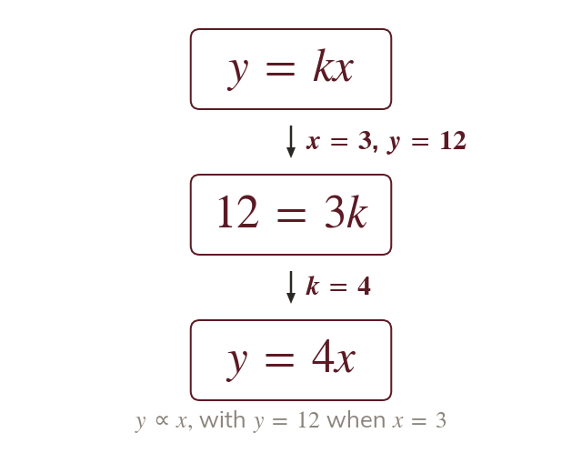
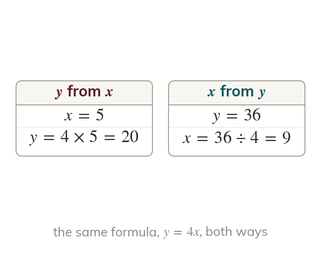
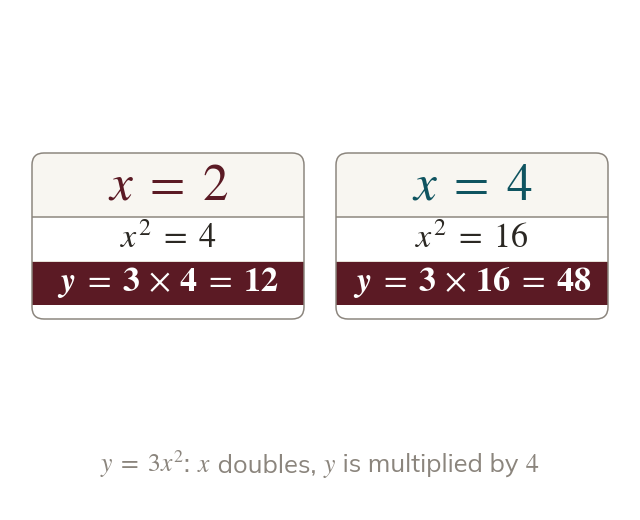
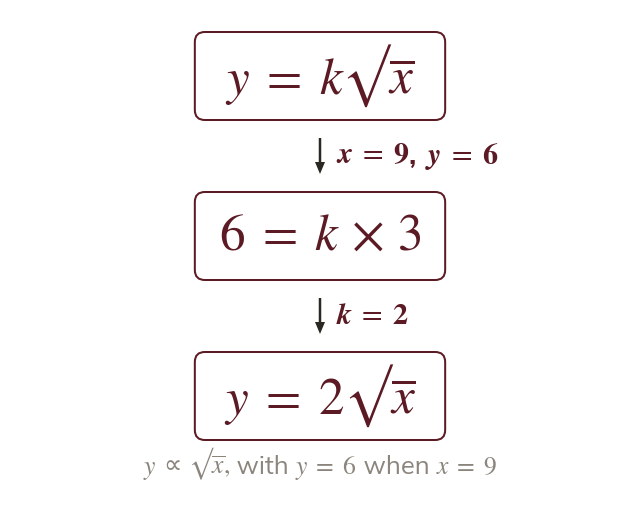

One pair fixes k
One known pair of values fixes k. The formula then gives every other pair.
Many real formulas are proportions: a falling stone's distance grows with the square of the time. One known pair of values fixes k, and the formula then answers any question.
Work down the page at your own pace. Write every answer in your book first, then click to check it.
Read each card, then follow the worked examples one step at a time.

One known pair of values fixes k. The formula then gives every other pair.

The formula finds y from x. It also finds x from y, by solving an equation.
Pick an answer. If it's wrong, the feedback tells you which mistake it was.
Read each card, then follow the worked examples one step at a time.

In the input is squared before multiplies it. Doubling multiplies by

A cube or a root follows the same four steps. Only the formula changes.
Pick an answer. If it's wrong, the feedback tells you which mistake it was.
Finished? Next lesson: 10H.19.3 Inverse Proportion Formulae.
Log in, then search for a code to practise that skill.
Videos, worksheets and more on each part of this lesson.